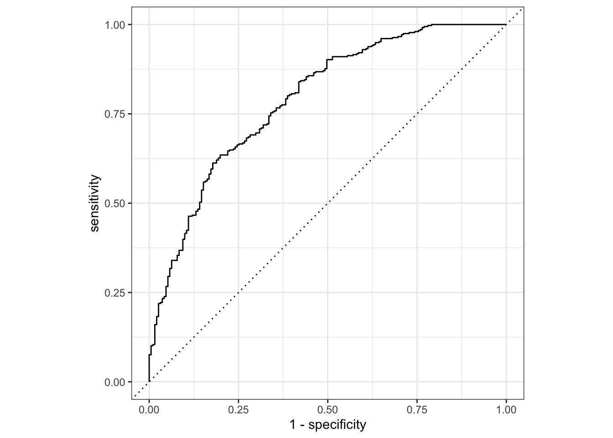
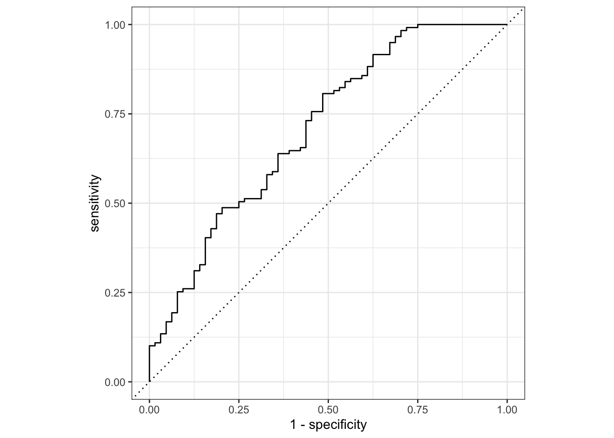
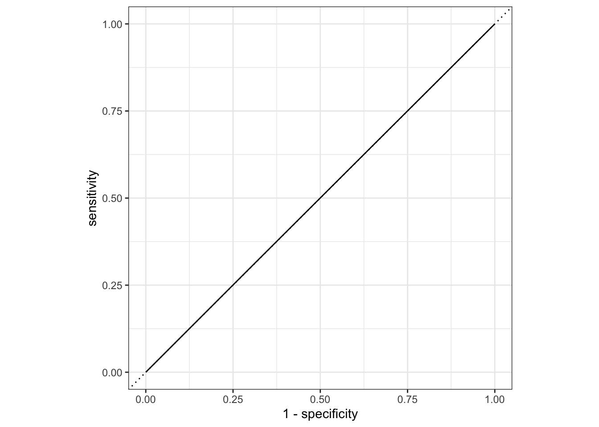
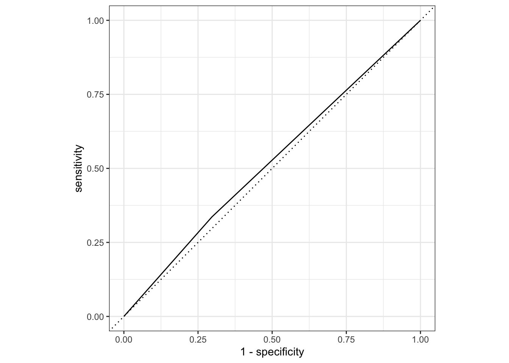

── Attaching packages ─────────────────────────────────────── tidyverse 1.3.2 ──
✔ ggplot2 3.4.1 ✔ purrr 1.0.1
✔ tibble 3.1.8 ✔ dplyr 1.1.0
✔ tidyr 1.2.1 ✔ stringr 1.5.0
✔ readr 2.1.3 ✔ forcats 0.5.2
── Conflicts ────────────────────────────────────────── tidyverse_conflicts() ──
✖ dplyr::filter() masks stats::filter()
✖ dplyr::lag() masks stats::lag()
here() starts at /Users/deannalanier/Desktop/All_Classes_UGA/2023Spr_Classes/MADA/deannalanier-MADA-portfolio
Attaching package: 'scales'
The following object is masked from 'package:purrr':
discard
The following object is masked from 'package:readr':
col_factor
── Attaching packages ────────────────────────────────────── tidymodels 1.0.0 ──
✔ broom 1.0.2 ✔ rsample 1.1.1
✔ dials 1.1.0 ✔ tune 1.0.1
✔ infer 1.0.4 ✔ workflows 1.1.3
✔ modeldata 1.1.0 ✔ workflowsets 1.0.0
✔ parsnip 1.0.4 ✔ yardstick 1.1.0
✔ recipes 1.0.5
── Conflicts ───────────────────────────────────────── tidymodels_conflicts() ──
✖ scales::discard() masks purrr::discard()
✖ dplyr::filter() masks stats::filter()
✖ recipes::fixed() masks stringr::fixed()
✖ dplyr::lag() masks stats::lag()
✖ yardstick::spec() masks readr::spec()
✖ recipes::step() masks stats::step()
• Search for functions across packages at https://www.tidymodels.org/find/
Loading required package: Matrix
Attaching package: 'Matrix'
The following objects are masked from 'package:tidyr':
expand, pack, unpack
Loaded glmnet 4.1-7Flu Anlaysis - Model Eval
Load Libraries
Load the data
#path to clean data
data = readRDS(here("fluanalysis", "data", "cleandata.rds")) #load RDS fileCheck the data
#check the data to make sure it has loaded properly
head(data) SwollenLymphNodes ChestCongestion ChillsSweats NasalCongestion CoughYN Sneeze
1 Yes No No No Yes No
2 Yes Yes No Yes Yes No
3 Yes Yes Yes Yes No Yes
4 Yes Yes Yes Yes Yes Yes
5 Yes No Yes No No No
6 No No Yes No Yes Yes
Fatigue SubjectiveFever Headache Weakness WeaknessYN CoughIntensity CoughYN2
1 Yes Yes Yes Mild Yes Severe Yes
2 Yes Yes Yes Severe Yes Severe Yes
3 Yes Yes Yes Severe Yes Mild Yes
4 Yes Yes Yes Severe Yes Moderate Yes
5 Yes Yes Yes Moderate Yes None No
6 Yes Yes Yes Moderate Yes Moderate Yes
Myalgia MyalgiaYN RunnyNose AbPain ChestPain Diarrhea EyePn Insomnia
1 Mild Yes No No No No No No
2 Severe Yes No No No No No No
3 Severe Yes Yes Yes Yes No No Yes
4 Severe Yes Yes No No No No Yes
5 Mild Yes No No No No Yes Yes
6 Moderate Yes No No Yes Yes No No
ItchyEye Nausea EarPn Hearing Pharyngitis Breathless ToothPn Vision Vomit
1 No No No No Yes No No No No
2 No No Yes Yes Yes No No No No
3 No Yes No No Yes Yes Yes No No
4 No Yes Yes No Yes No No No No
5 No Yes No No Yes No No No No
6 No Yes No No Yes Yes No No No
Wheeze BodyTemp
1 No 98.3
2 No 100.4
3 No 100.8
4 Yes 98.8
5 No 100.5
6 Yes 98.4Data Splitting
# set seed
set.seed(456)
## Split the data into test and training
data_split=initial_split(data,strata = Nausea)
#create training and test
data_train=training(data_split)
data_test=testing(data_split)Create Workflow Fit Model
#logistical model because of categorical outcome
recipe_1=recipe(Nausea~.,data=data_train)
log_mod=logistic_reg()%>%
set_engine("glm")#create workflow
workflow_1=workflow()%>%
add_model(log_mod)%>%
add_recipe(recipe_1)
workflow_1══ Workflow ════════════════════════════════════════════════════════════════════
Preprocessor: Recipe
Model: logistic_reg()
── Preprocessor ────────────────────────────────────────────────────────────────
0 Recipe Steps
── Model ───────────────────────────────────────────────────────────────────────
Logistic Regression Model Specification (classification)
Computational engine: glm #fit the model with training set
model_fit=workflow_1%>%
fit(data=data_train)
model_fit%>%
extract_fit_parsnip()%>%
tidy()# A tibble: 38 × 5
term estimate std.error statistic p.value
<chr> <dbl> <dbl> <dbl> <dbl>
1 (Intercept) -3.21 9.15 -0.351 0.726
2 SwollenLymphNodesYes -0.435 0.231 -1.88 0.0596
3 ChestCongestionYes 0.0827 0.250 0.330 0.741
4 ChillsSweatsYes 0.119 0.332 0.358 0.720
5 NasalCongestionYes 0.327 0.295 1.11 0.267
6 CoughYNYes -0.501 0.590 -0.849 0.396
7 SneezeYes 0.214 0.251 0.854 0.393
8 FatigueYes 0.391 0.463 0.845 0.398
9 SubjectiveFeverYes 0.423 0.260 1.62 0.104
10 HeadacheYes 0.415 0.342 1.22 0.224
# … with 28 more rows#model evaluation
predict(model_fit,data_train)Warning in predict.lm(object, newdata, se.fit, scale = 1, type = if (type == :
prediction from a rank-deficient fit may be misleading# A tibble: 547 × 1
.pred_class
<fct>
1 No
2 No
3 No
4 No
5 No
6 No
7 No
8 No
9 No
10 No
# … with 537 more rowsmodel_train_eval=augment(model_fit,data_train)Warning in predict.lm(object, newdata, se.fit, scale = 1, type = if (type == :
prediction from a rank-deficient fit may be misleading
Warning in predict.lm(object, newdata, se.fit, scale = 1, type = if (type == :
prediction from a rank-deficient fit may be misleading#ROC curve to estimate area
model_train_eval %>%
roc_curve(truth = Nausea, .pred_No) %>%
autoplot()Warning: Returning more (or less) than 1 row per `summarise()` group was deprecated in
dplyr 1.1.0.
ℹ Please use `reframe()` instead.
ℹ When switching from `summarise()` to `reframe()`, remember that `reframe()`
always returns an ungrouped data frame and adjust accordingly.
ℹ The deprecated feature was likely used in the yardstick package.
Please report the issue at <]8;;https://github.com/tidymodels/yardstick/issueshttps://github.com/tidymodels/yardstick/issues]8;;>.
#AUC
model_train_eval %>%
roc_auc(truth = Nausea, .pred_No)# A tibble: 1 × 3
.metric .estimator .estimate
<chr> <chr> <dbl>
1 roc_auc binary 0.790Predict
# eval
predict(model_fit,data_test)Warning in predict.lm(object, newdata, se.fit, scale = 1, type = if (type == :
prediction from a rank-deficient fit may be misleading# A tibble: 183 × 1
.pred_class
<fct>
1 No
2 No
3 No
4 No
5 Yes
6 Yes
7 No
8 Yes
9 Yes
10 No
# … with 173 more rowsmodel_test_eval=augment(model_fit,data_test)Warning in predict.lm(object, newdata, se.fit, scale = 1, type = if (type == :
prediction from a rank-deficient fit may be misleading
Warning in predict.lm(object, newdata, se.fit, scale = 1, type = if (type == :
prediction from a rank-deficient fit may be misleading#ROC curve to estimate area
model_test_eval%>%
roc_curve(truth=Nausea,.pred_No)%>%
autoplot()
#AUC
model_test_eval=augment(model_fit,data_test)Warning in predict.lm(object, newdata, se.fit, scale = 1, type = if (type == :
prediction from a rank-deficient fit may be misleading
Warning in predict.lm(object, newdata, se.fit, scale = 1, type = if (type == :
prediction from a rank-deficient fit may be misleadingmodel_test_eval%>%
roc_auc(truth=Nausea,.pred_No)# A tibble: 1 × 3
.metric .estimator .estimate
<chr> <chr> <dbl>
1 roc_auc binary 0.707fit model with main predictor
set.seed(5678)
recipe_2=recipe(Nausea~RunnyNose,data=data_train)
#logistical model
log_mod=logistic_reg()%>%
set_engine("glm")
workflow_2=workflow()%>%
add_model(log_mod)%>%
add_recipe(recipe_2)
workflow_2══ Workflow ════════════════════════════════════════════════════════════════════
Preprocessor: Recipe
Model: logistic_reg()
── Preprocessor ────────────────────────────────────────────────────────────────
0 Recipe Steps
── Model ───────────────────────────────────────────────────────────────────────
Logistic Regression Model Specification (classification)
Computational engine: glm model_2=workflow_2%>%
fit(data=data_train)
model_2%>%
extract_fit_parsnip()%>%
tidy()# A tibble: 2 × 5
term estimate std.error statistic p.value
<chr> <dbl> <dbl> <dbl> <dbl>
1 (Intercept) -0.625 0.170 -3.67 0.000242
2 RunnyNoseYes 0.00301 0.200 0.0150 0.988 Use model to predict
# model eval training set ROC
predict(model_2,data_train)# A tibble: 547 × 1
.pred_class
<fct>
1 No
2 No
3 No
4 No
5 No
6 No
7 No
8 No
9 No
10 No
# … with 537 more rowsmodel_train_eval_2=augment(model_2,data_train)
model_train_eval_2%>%
roc_curve(truth=Nausea,.pred_No)%>%
autoplot()
#AUC
model_train_eval_2%>%
roc_auc(truth=Nausea,.pred_No)# A tibble: 1 × 3
.metric .estimator .estimate
<chr> <chr> <dbl>
1 roc_auc binary 0.500# ROC and prediction
predict(model_2,data_test)# A tibble: 183 × 1
.pred_class
<fct>
1 No
2 No
3 No
4 No
5 No
6 No
7 No
8 No
9 No
10 No
# … with 173 more rowsmodel_test_eval_2=augment(model_2,data_test)
model_test_eval_2%>%
roc_curve(truth=Nausea,.pred_No)%>%
autoplot()
# AUC
model_test_eval_2%>%
roc_auc(truth=Nausea,.pred_No)# A tibble: 1 × 3
.metric .estimator .estimate
<chr> <chr> <dbl>
1 roc_auc binary 0.520This section is added by Aidan Troha
We will be using the data from the cleaned flu analysis data, so we will need to load the data from the data folder.
dat <- readRDS(here::here("fluanalysis","data","cleandata.rds"))Generating training and test data sets
We’ll then need to find a way to create a dummy data set, called the test data set, from the cleaned data. We will use this data to test the efficacy of the generated model. We will use the remaining data, the training data set, to fit the model.
To attempt this, we will set a seed with set.seed() for randomization to ensure that these processes are reproducible. Further, we use initial_split() from the rsample package to generate a splitting rule for the training and test data sets.
set.seed(55555)
data_split <- rsample::initial_split(dat,prop=7/10)
training_data <- training(data_split)
test_data <- testing(data_split)Generating a worklow
We intend to use the tidymodels workflow to generate our linear regression model. Within this workflow, we use recipe() and worklfow() to identify the relationships of interest.
# Initialize the interactions we are interested in
flu_line_rec <- recipe(BodyTemp ~ ., data = training_data)
# Initialize the logistic regression formula
line_mod <- linear_reg() %>%
set_engine("lm")
# Initialize the workflow
flu_wflowP2 <-
workflow() %>%
add_model(line_mod) %>%
add_recipe(flu_line_rec)
flu_wflowP2══ Workflow ════════════════════════════════════════════════════════════════════
Preprocessor: Recipe
Model: linear_reg()
── Preprocessor ────────────────────────────────────────────────────────────────
0 Recipe Steps
── Model ───────────────────────────────────────────────────────────────────────
Linear Regression Model Specification (regression)
Computational engine: lm Now that we have generated the workflow, we can fit the model to the training and test data sets, respectively.
training_fit <- flu_wflowP2 %>%
fit(data = training_data)
test_fit <- flu_wflowP2 %>%
fit(data = test_data)Fitting the model with primary predictor
Now, let’s choose only 1 predictor instead of using all of them.
flu_line_rec2 <- recipe(BodyTemp ~ RunnyNose, data = training_data)
flu_wflow2 <-
workflow() %>%
add_model(line_mod) %>%
add_recipe(flu_line_rec2)
training_fit2 <- flu_wflow2 %>%
fit(data = training_data)
test_fit2 <- flu_wflow2 %>%
fit(data = test_data)We now want to compare the estimates across both models for each data set. To do this, we use augment().
training_aug <- augment(training_fit, training_data)Warning in predict.lm(object = object$fit, newdata = new_data, type =
"response"): prediction from a rank-deficient fit may be misleadingtest_aug <- augment(test_fit, test_data)Warning in predict.lm(object = object$fit, newdata = new_data, type =
"response"): prediction from a rank-deficient fit may be misleadingtraining_aug2 <- augment(training_fit2, training_data)
test_aug2 <- augment(test_fit2, test_data)If we want to assess how well the model makes predictions, we can evaluate this with the Root Mean Squared Error, the RMSE, for continuous variable. rmse from the Metrics package will evaluate the fit of the model on the training_data and the test_data, separately.
# Model with all predictors
Metrics::rmse(actual = training_aug$BodyTemp, predicted = training_aug$.pred)[1] 1.137446Metrics::rmse(actual = test_aug$BodyTemp, predicted = test_aug$.pred)[1] 0.9599012# Model with main predictor alone
Metrics::rmse(actual = training_aug2$BodyTemp, predicted = training_aug2$.pred)[1] 1.215498Metrics::rmse(actual = test_aug2$BodyTemp, predicted = test_aug2$.pred)[1] 1.120484Conclusion
The Data above show that the model with all the possible predictors is the best model to fit the data as it minimizes the Root Mean Squared Errors (RMSE) of the data.